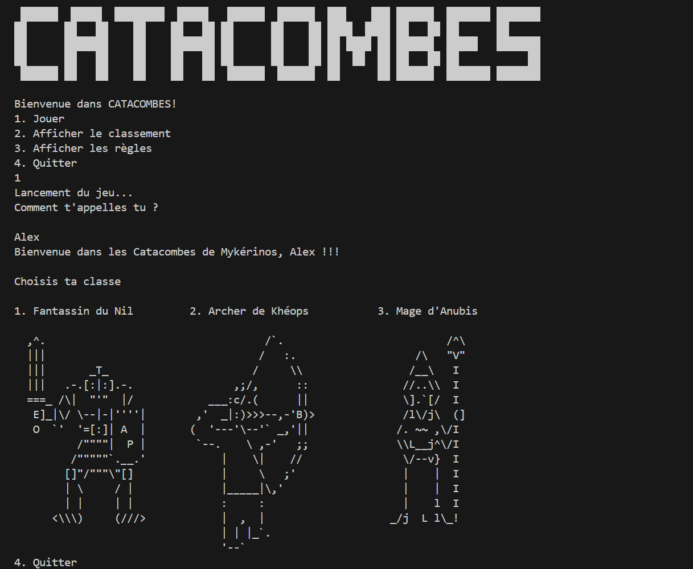
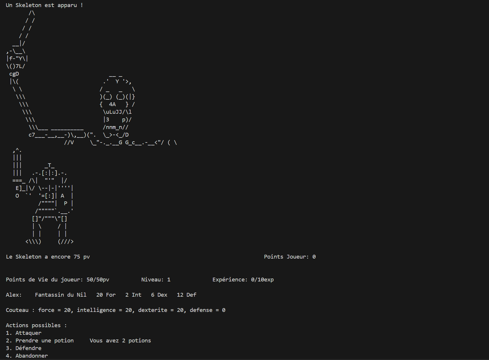

Catacombs


Description du projet
Catacombs est un jeu de type "roguelike" qui a été réalisé grâce à la méthodologie Agile, en utilisant la méthode Scrum. Dans ce jeu le joueur incarne un aventurier qui doit explorer des catacombes pour trouver un trésor. Le joueur doit se frayer un chemin à travers les catacombes, combattre des monstres et amasser le plus de points possibles. Au fur et à mesure de sa progression, le joueur peut trouver des armes et des objets qui lui permettent d'améliorer ses statistiques, ses compétences et de se soigner. Mais plus le joueur avance, plus les monstres deviennent puissants. Le joueur peut également défier ses camarades en essayant de battre leur score.
Composants clés
- Méthodologie Agile
- Importation/exportation de données dans un CSV
- Affichage dans une console Unix
Technologies utilisées
Java
SCRUM
 Voir le dépôt GitLab
Voir le dépôt GitLab